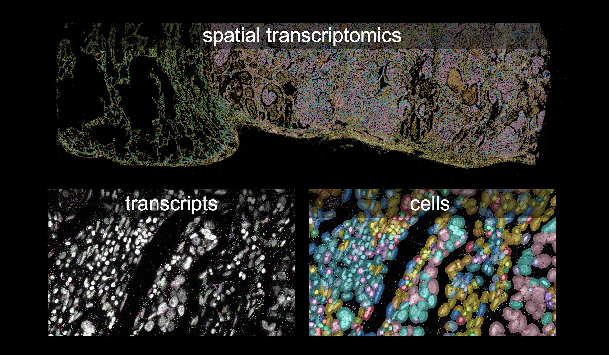
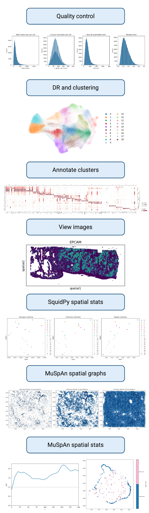

Reproducible Spatial Transcriptomics Pipeline with RSE Best Practices
Introduction
This exemplar details an analysis pipeline for spatial transcriptomics (10X Xenium platform).
Spatial transcriptomics
Below is representative image of spatial transcriptomics data.

Spatial transcriptomics analysis pipeline
The pipeline covers preprocessing, quality control, dimensionality reduction, clustering, annotation, viewing spatial images, and spatial statistics (squidpy and MuSpAn).
Cell segmentation is not included in this pipeline as it is performed prior to the analysis using the 10X Genomics Xenium software. If you would like to segment the cells yourself, please refer to the 10X Genomics Nucleus and Cell Segmentation Algorithms for more information.

Best Practices for Software Engineering
In addition to the analysis pipeline, we highlight several good software engineering practices including version control, containarization, linting, and continuous integration. Details on these practices and how to implement them can be found in the Best Practices for Software Engineering section of the documentation.
Author information
This exemplar was developed at Imperial College London by Sara Patti in collaboration with Adrian D'Alessandro from Research Software Engineering and Jesus Urtasun from Research Computing & Data Science at the Early Career Researcher Institute.
Learning Outcomes 🎓
After completing this exemplar, students will be able to:
- Describe the key steps in spatial transcriptomic analysis
- Analyze spatial transcriptomic data and apply spatial statistical methods
- Design and build a reproducible analysis pipeline
- Apply research software engineering (RSE) best practices detailed in the RSE Best Practices section
Target Audience 🎯
- Scientists interested in analyzing spatial transcriptomics data
- Biologists interested in developing bioinformatic pipelines
Prerequisites ✅
Prior to undertaking this exemplar, learners should have the following skills and knowledge:
- Python
- Command line interface (CLI)
Although not necessary, we recommend the following skills and knowledge to enhance the learning experience:
- Spatial transcriptomics data and underlying principles (e.g. 10X Genomics Xenium)
- Understand data analysis and statistics
- Familiarity with the scverse ecosystem (e.g. scanpy, squidpy)
- Structuring python projects and packages
Academic 📚
- Familiarity with biological concepts and principals (e.g mRNA, gene expression, transcriptomics)
- Basic understanding of spatial transcriptomics platforms and datasets
- Familiarity with single-cell RNA sequencing (scRNA-seq) analysis
System 💻
- Python 3.10+
- Anaconda or miniconda required for Mac Intel users, for more details please refer to the Installation Guide
Getting Started 🚀
-
Start by cloning the repository to your local machine in the directory of your choice
git clone https://github.com/ImperialCollegeLondon/ReCoDe-spatial-transcriptomics.git -
Download the Xenium Lung FFPE data
-
Data can be downloaded from the 10x Genomics website, or directly from the command line.
- If downloading from the website, download the
Xenium_V1_Human_Lung_Cancer_Addon_FFPE_outs.zipfile. - If downloading from the command line, use the following command:
curl -O https://cf.10xgenomics.com/samples/xenium/2.0.0/Xenium_V1_Human_Lung_Cancer_Addon_FFPE/Xenium_V1_Human_Lung_Cancer_Addon_FFPE_outs.zip - If downloading from the website, download the
-
Unzip the downloaded file.
- If you downloaded the file from the website, unzip it using your preferred method.
-
If you downloaded the file from the command line, use the following command:
unzip Xenium_V1_Human_Lung_Cancer_Addon_FFPE_outs.zip
-
-
Create new virtual environment using
condaorvenvFull details on how to set up the environment and install necessary packages can be found in the Installation Guide.If you are using
venv, run the following command:cd ReCoDe-spatial-transcriptomics # Ensure you are in the root directory of the repo python -m venv recode_st # create a new virtual environment named recode_st source recode_st/bin/activate # On Windows use: st_env\Scripts\activate pip install -r requirements.txt # Install required packages pip install -e . # Install the package in editable mode to install the st_recode package as defined by pyproject.tomlIf you are using
conda, run the following command:cd ReCoDe-spatial-transcriptomics # Ensure you are in the root directory of the repo conda env create -f environment.yml conda activate recode_st pip install --no-build-isolation --no-deps -e . pip install https://docs.muspan.co.uk/code/latest.zip # If you need the MuSpAn modulesNewest versions for some packages do not support older Macs with Intel CPUs, so we recommend using the
condaenvironment for these systems. If you are using an Apple Silicon Mac, you can use eithercondaorvenv. -
Update the
config.tomlfile with the relevant paths and parameters for your analysis. This file contains configuration settings for the analysis pipeline, such as paths to data files and parameters for various steps in the pipeline.Additional details can be found in the Configuration Management section of the documentation.
-
Run the analysis pipeline by executing the main script.
python -m recode_st config.toml
Software Tools 🛠️
These dependencies are required to run the exemplar:
- matplotlib
- numpy
- pandas[excel]
- torch
- scanpy[leiden]
- spatialdata
- spatialdata-io
- squidpy
- seaborn
- zarr
- pydantic
These dependencies are required to develop the exemplar:
- mkdocs
- mkdocs-material
- ruff
- pre-commit
- pytest
Project Structure 🗂️
Overview of code organisation and structure.
├── analysis # This will be created by the pipeline and contains the results of the analysis
├── data
│ ├── selected_cells_stats.csv # subset of cells used for the spatial analysis
│ ├── xenium # download and unzipped data here
│ └── xenium.zarr # created by the pipeline
├── docs
│ ├── installation.md # additional doc.md files
│ └── assets
├── src
│ └──recode_st
│ ├── __init__.py
│ ├── __main__.py
│ ├── annotate.py
│ ├── config.py
│ ├── dimension_reduction.py
│ ├── format_data.py
│ ├── helper_function.py
│ ├── logging_config.py
│ ├── ms_spatial_graph.py
│ ├── ms_spatial_stat.py
│ ├── muspan.py
│ ├── qc.py
│ ├── spatial_statistics.py
│ └── view_images.py
├── tests
│ ├── test_config.py
│ ├── test_helper_function.py
│ ├── test_logging_config.py
│ └── test_main.py
└── utils
Code is organised into logical components:
srccontains the code for core modulesdatacontains needed datasets - user must download the data and unzip itdocsfor documentationtestsfor testing scripts
Roadmap 🗺️
Preprocessing & Quality Control
Goal: Ensure clean, usable spatial gene expression data.
It is critical to preprocess and perform quality control on the data before proceeding with analysis. This step ensures that the data is clean, usable, and of high quality by removing low quality cells and low quality transcripts.
Steps:
- Calculate quality metrics
- Filter low-quality genes and cells
- Normalize and transform gene counts
Dimensionality Reduction & Clustering
Goal: Identify patterns and groups of similar gene expression profiles.
Dimensionality Reduction a technique used to reduce the number of features (or dimensions) in a dataset while preserving important information. Clustering is a technique used to group similar data points together based on their features. It is critical to determine the most accurate number of clusters to ensure that the clusters are meaningful and representative of the data.
Steps:
- Compute PCA and neighbors
- Compute and plot UMAP
- Cluster cells using Leiden algorithms
- Visualize clusters on UMAP
Annotation & Cell Type Identification
Goal: Assign biological meaning to clusters.
Annotation is the process of assigning biological meaning to clusters. This typically equates to assigning a cell type identification to each clusters. is the process of identifying the cell types present in the data. Choosing the number of clusters can be challenging and can be seen as more of an art than a science. It is important to choose the number of clusters that best represents the data and the biological question being asked. More information on how to choose the number of clusters can be found in the scRNAseq best practices.
Steps:
- Compute differentially expressed genes for each cluster
- Visualize cluster marker genes
- Identify cell types with marker genes
- Annotate clusters with known cell types
Spatial Mapping & Visualization
Goal: Map gene expression and clusters back to their spatial context.
- Overlay expression and clusters on tissue image
- Plot spatially enriched genes
- Map cell types or states in space
Spatial Statistics & Spatially Variable Genes
Goal: Quantify spatial patterns and variability utilizing spatial statistics.
We use two different approaches to spatial statistics: Squidpy and MuSpAn.
Squidpy
- Construct spatial networks
- Spatial autocorrelation (e.g. Moran's I)
- Neighborhood Enrichment
MuSpAn
- Construct spatial networks
- Cross-PCF pairwise comparison
There are several additional spatial statistics methods available in MuSpAn, including:
- wPCF pairwise comparison
- Spatial autocorrelation (Hotspot Analysis)
- Ripley's K
- Neighborhood Enrichment
- Community detection
- Network filteration
- Comparing Networks
Further analysis
We have included several potential downstream analysis methods in this pipeline to discover meaningful biological insights. Below are additional analysis approaches one could use to build on the methods mentioned above.
- DE between regions or conditions
- Pathway analysis (e.g. GSEA, ORA)
- Spatially variable genes (e.g
SpatialDE) - Drug-to-cell interactions (e.g
Drug2Cell) - Ligand-receptor interactions (e.g
SOAPy)
and more...
Data 📊
- Small toy dataset for testing and development (TBD)
- Xenium Lung FFPE data
Best Practice Notes 📝
- Version control (git)
- Virtual environments
- Modularity and modularization
- Code documentation
- Code style, linters, and code formatters
- Continuous integration and continuous deployments
- Code testing
- Configuration management with Pydantic
Estimated Time ⏳
| Task | Time |
|---|---|
| Reading | 3 hours |
| Practising | 3 hours |
Additional Resources 🔗
Learn more about spatial transcriptomics
- An introduction to spatial transcriptomics for biomedical research
- 10x Genomics Xenium documentation
- Single Cell Spatial Transcriptomics: 10x Genomics Xenium
- Best practices for single cell and spatial transcriptomics
Learn more about networks and spatial statistics
Learn more about our tools and libraries
- 30-days-of-python
- scverse documentation
- squidpy documentation
- scanpy documentation
- MuSpAn documentation
Video Tutorials
We have included bioinformatic bloggers that can help you get started with understanding key concepts in bioinformatics and transcriptomics analysis:
Licence 📄
This project is licensed under the BSD-3-Clause license.